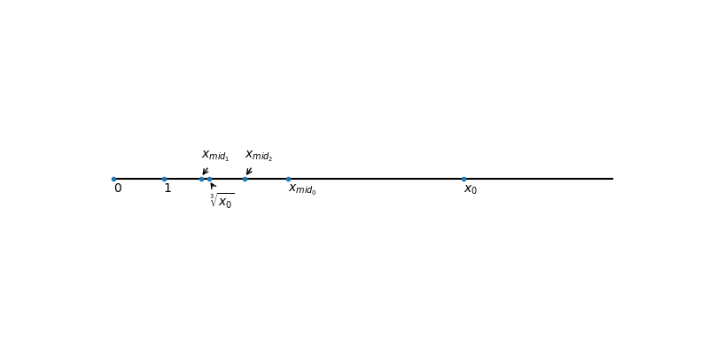
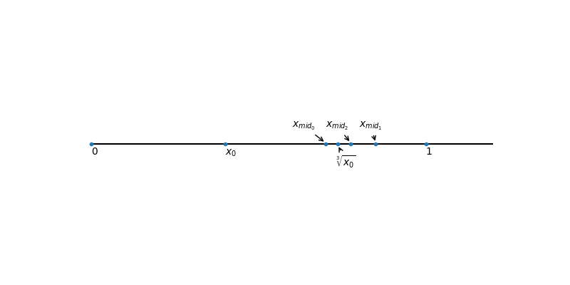
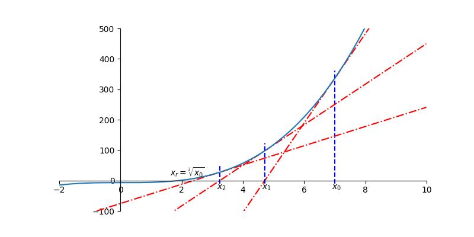

Table of Contents
1 Algorithm Description
1.1 Bisection method
The bisection method in mathematics is a root-finding method that repeatedly bisects an interval and then selects a subinterval in which a subinterval in which a root must lie for further processing.
1.2 Newton-Raphson method
The Newton-Raphson method is a method for finding successively better approximations to the roots of a real-valued function. The formula of Newton-Raphson method: \[x_{n+1} = x_n - \frac{f(x_n)}{f'(x_n)}\]
2 Proof
2.1 Bisection method
Assume the given number X0 is positive. Because the symmetry of the positive and negative number on number axis, this algorithm should work for negative number if it works for positive number.
I. If \(x_0 > 1\), let \(x_{high_0} = x_0\), \(x_{low_0} = 0\), \(x_{mid_0} = \frac{x_{high_0} + x_{low_0}}{2}\)

Step A: If \(x^3_{mid_0} > x_0 \Rightarrow x_{mid_0} > \sqrt[3]{x}\), then let \(x_{high_1} = x_{mid_0}\), \(x_{low_1} = x_{low_0} = 0\), \(x_{mid_1} = \frac{x_{high_1} + x_{low_1}}{2}\)
Step B: If \(x^3_{mid_1} < x_0 \Rightarrow x_{mid_1} < \sqrt[3]{x}\), then let \(x_{low_2} = x_{mid_1}\), \(x_{high_2} = x_{high_1} = x_{mid_0}\), \(x_{mid_2} = \frac{x_{high_2} + x_{low_2}}{2}\)
Repeat step A or B until \(|x_{mid_{n+1}} - x_{mid_n}| < precision~error\)
II. If \(x_0 < 1\), let \(x_{high_0} = 1\), \(x_{low_0} = x_0\), \(x_{mid_0} = \frac{x_{high_0} + x_{low_0}}{2}\)

Step A: If \(x^3_{mid_0} < x_0 \Rightarrow x_{mid_0} < \sqrt[3]{x}\), then let \(x_{low_1} = x_{mid_0}\), \(x_{high_1} = x_{high_0} = 1\), \(x_{mid_1} = \frac{x_{high_1} + x_{low_1}}{2}\)
Step B: If \(x^3_{mid_1} > x_0 \Rightarrow x_{mid_1} > \sqrt[3]{x}\), then let \(x_{high_2} = x_{mid_1}\), \(x_{low_2} = x_{low_1} = x_{mid_0}\), \(x_{mid_2} = \frac{x_{high_2} + x_{low_2}}{2}\)
Repeat step A or B until \(|x_{mid_{n+1}} - x_{mid_n}| < precision~error\)
2.2 Newton-Raphson method

Let \(x_r = \sqrt[3]{x_0}\), so \(f(x_r) = 0 ----~Eq.1\)
Given \(x_{n+1} = x_n - \frac{f(x_n)}{f'(x_n)} ----~Eq.2\)
By Taylor Series, \[f(x_r) = f(x_n) + f'(x_n)(x_r - x_n) + \frac{f''(x_n)}{2!}(x_r-x_n)^2 + \frac{f'''(x_n)}{3!}(x_r-x_n)^3+\cdots\]
Here I use the previous 3 items as the dominant polynomials.
Let \(f(x_r) \approx f(x_n) + f'(x_n)(x_r - x_n) + \frac{f''(x_n)}{2!}(x_r-x_n)^2 ----~Eq.3\)
Substitute Eq.1 and Eq.2 into Eq.3,
\(\Rightarrow 0 = f'(x_n)(x_n - x_{n+1}) + f'(x_n)(x_r - x_n) + \frac{f''(x_n)}{2!}(x_r-x_n)^2\)
\(\Rightarrow x_{n+1} - x_r = \frac{f''(x_n)}{2!}(x_r-x_n)^2\)
Let error \(e_n = x_n -x_r\),
\(\Rightarrow e_{n+1} = \frac{f''(x_n)}{2f'(x_n)}e^2_n\)
The last equation tells that after each iteration, the error in new estimate is proportional to the square of the old estimate. That means the precision digits will double for each iteration.